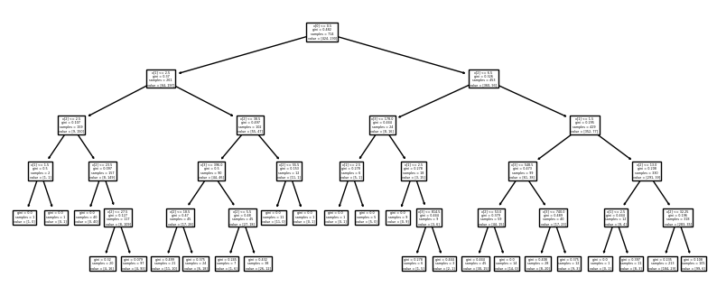
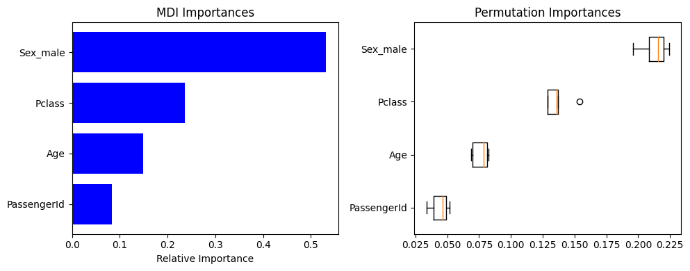

import pandas as pd
import numpy as np
import matplotlib.pyplot as plt
from sklearn.model_selection import train_test_split
from sklearn.tree import DecisionTreeClassifier, DecisionTreeRegressor
from sklearn.ensemble import BaggingClassifier, BaggingRegressor
from sklearn import tree
#from graphviz import Source
#import graphviz
from IPython.display import Image
#from sklearn.tree import export_graphviz
#import pydotplus
from six import StringIO
from sklearn.inspection import permutation_importance10 From Trees to Forests
Classification Tree - Titanic
Let us build a classification tree on the Titanic data using Survived as the outcome and Sex, Pclass, Age, PassengerId as explanatory variables
df = pd.read_csv('data/TitanicTrain.csv') # Load the data
df.info()<class 'pandas.core.frame.DataFrame'>
RangeIndex: 891 entries, 0 to 890
Data columns (total 12 columns):
# Column Non-Null Count Dtype
--- ------ -------------- -----
0 PassengerId 891 non-null int64
1 Survived 891 non-null int64
2 Pclass 891 non-null int64
3 Name 891 non-null object
4 Sex 891 non-null object
5 Age 714 non-null float64
6 SibSp 891 non-null int64
7 Parch 891 non-null int64
8 Ticket 891 non-null object
9 Fare 891 non-null float64
10 Cabin 204 non-null object
11 Embarked 889 non-null object
dtypes: float64(2), int64(5), object(5)
memory usage: 83.7+ KBone_hot_data = pd.get_dummies(df[["Sex", "Pclass", "Age", "PassengerId","Survived"]])
one_hot_data.head()| Pclass | Age | PassengerId | Survived | Sex_female | Sex_male | |
|---|---|---|---|---|---|---|
| 0 | 3 | 22.0 | 1 | 0 | 0 | 1 |
| 1 | 1 | 38.0 | 2 | 1 | 1 | 0 |
| 2 | 3 | 26.0 | 3 | 1 | 1 | 0 |
| 3 | 1 | 35.0 | 4 | 1 | 1 | 0 |
| 4 | 3 | 35.0 | 5 | 0 | 0 | 1 |
train=one_hot_data[["Sex_male", "Pclass", "Age", "PassengerId","Survived"]].dropna()
X_train = train[["Sex_male", "Pclass", "Age", "PassengerId"]]
Y_train = train["Survived"]Shallow Tree of Depth 2
from sklearn import tree
plt.rcParams["figure.figsize"]=6,5
clf = tree.DecisionTreeClassifier(max_depth=2)
clf = clf.fit(X_train, Y_train)
tree.plot_tree(clf);
Variable Importance
#MDI
MDI_importances = clf.feature_importances_
indices = np.argsort(MDI_importances)
features = X_train.columns#permutation importance:
MDA_importances = permutation_importance(clf, X_train, Y_train, n_repeats=5,random_state=42, n_jobs=2)
sorted_idx = MDA_importances.importances_mean.argsort()plt.rcParams["figure.figsize"]=10,4
fig, (ax1, ax2) = plt.subplots(1, 2)
ax1.set_title('MDI Importances')
ax1.barh(range(len(indices)), MDI_importances[indices], color='b', align='center')
ax1.set_yticks( np.arange(4))
ax1.set_yticklabels(features[indices])
ax1.set(xlabel='Relative Importance')
ax2.boxplot(MDA_importances.importances[sorted_idx].T,
vert=False, labels=features[sorted_idx])
tpmp=ax2.set_title("Permutation Importances")
fig.tight_layout()
Increasing Tree Depth
Notice the finer and finer splits on Age and PassengerId
clf = tree.DecisionTreeClassifier(max_depth=5)
clf = clf.fit(X_train, Y_train)
tmp=tree.plot_tree(clf);
Variable Importance
Notice that passenger ID and age are gaining MDI importance as the tree depth is increased!
#permutation importance:
MDA_importances = permutation_importance(clf, X_train, Y_train, n_repeats=5,random_state=42, n_jobs=2)
sorted_idx = MDA_importances.importances_mean.argsort()
#MDI
MDI_importances = clf.feature_importances_
indices = np.argsort(MDI_importances)
features = X_train.columnsplt.rcParams["figure.figsize"]=10,4
fig, (ax1, ax2) = plt.subplots(1, 2)
ax1.set_title('MDI Importances')
ax1.barh(range(len(indices)), MDI_importances[indices], color='b', align='center')
ax1.set_yticks( np.arange(4))
ax1.set_yticklabels(features[indices])
ax1.set(xlabel='Relative Importance')
ax2.boxplot(MDA_importances.importances[sorted_idx].T,
vert=False, labels=features[sorted_idx])
tpmp=ax2.set_title("Permutation Importances")
fig.tight_layout()
Ensembles of Estimators
This notion—that multiple overfitting estimators can be combined to reduce the effect of this overfitting—is what underlies an ensemble method called bagging. Bagging makes use of an ensemble (a grab bag, perhaps) of parallel estimators, each of which over-fits the data, and averages the results to find a better classification. An ensemble of randomized decision trees is known as a random forest.
This type of bagging classification can be done manually using Scikit-Learn’s BaggingClassifier meta-estimator, as shown here:
Loading and Splitting the Dataset
#`load_boston` has been removed from scikit-learn since version 1.2.
#from sklearn.datasets import load_boston
import random
from sklearn.metrics import mean_squared_error,confusion_matrix, classification_report#`load_boston` has been removed from scikit-learn since version 1.2.
#boston = load_boston()
url="https://raw.githubusercontent.com/markusloecher/DataScience-HWR/main/data/Boston.csv"
boston_df=pd.read_csv(url)
boston_df.head()| crim | zn | indus | chas | nox | rm | age | dis | rad | tax | ptratio | black | lstat | medv | |
|---|---|---|---|---|---|---|---|---|---|---|---|---|---|---|
| 0 | 0.00632 | 18.0 | 2.31 | 0 | 0.538 | 6.575 | 65.2 | 4.0900 | 1 | 296 | 15.3 | 396.90 | 4.98 | 24.0 |
| 1 | 0.02731 | 0.0 | 7.07 | 0 | 0.469 | 6.421 | 78.9 | 4.9671 | 2 | 242 | 17.8 | 396.90 | 9.14 | 21.6 |
| 2 | 0.02729 | 0.0 | 7.07 | 0 | 0.469 | 7.185 | 61.1 | 4.9671 | 2 | 242 | 17.8 | 392.83 | 4.03 | 34.7 |
| 3 | 0.03237 | 0.0 | 2.18 | 0 | 0.458 | 6.998 | 45.8 | 6.0622 | 3 | 222 | 18.7 | 394.63 | 2.94 | 33.4 |
| 4 | 0.06905 | 0.0 | 2.18 | 0 | 0.458 | 7.147 | 54.2 | 6.0622 | 3 | 222 | 18.7 | 396.90 | 5.33 | 36.2 |
y = boston_df['medv']
X = boston_df.drop('medv',axis=1)
X_train, X_test, y_train, y_test = train_test_split(X, y, test_size=0.3, random_state=123)
print(X_train.shape)
print(X_test.shape)(354, 13)
(152, 13)tree_B1 = DecisionTreeRegressor(random_state=0)
tree_B1.fit(X_train, y_train)
singleTreePreds = tree_B1.predict(X_test)
np.sqrt(mean_squared_error(y_test, singleTreePreds))4.224170737677708Bagging
baggedBoston = BaggingRegressor(base_estimator=tree_B1,n_estimators=200,oob_score=True)# The folloing line of code does all of these steps:
# It fits 200 trees on 200 bootstrapped vrsions of your training data !!
baggedBoston.fit(X_train, y_train)
# The predict function now computes 200 predistions for each data point and averages them !!
baggedPreds = baggedBoston.predict(X_test)
np.sqrt(mean_squared_error(y_test, baggedPreds))/Users/loecherm/.pyenv/versions/aug_hs_env/lib/python3.9/site-packages/sklearn/ensemble/_base.py:166: FutureWarning: `base_estimator` was renamed to `estimator` in version 1.2 and will be removed in 1.4.
warnings.warn(3.699118861118715baggedBoston.oob_score_ # this is ythe equivalent of your test set loss !0.8727022246437939Random Forests
from sklearn.ensemble import RandomForestRegressor
forest = RandomForestRegressor(200, max_features=0.5, oob_score=True)
forest.fit(X_train, y_train)
forestPreds = forest.predict(X_test)
np.sqrt(mean_squared_error(y_test, forestPreds))3.4412431529172727forest.oob_score_0.8758200098217869Tasks
- Find the best value for
mtry - Plot the two kinds of variable importances